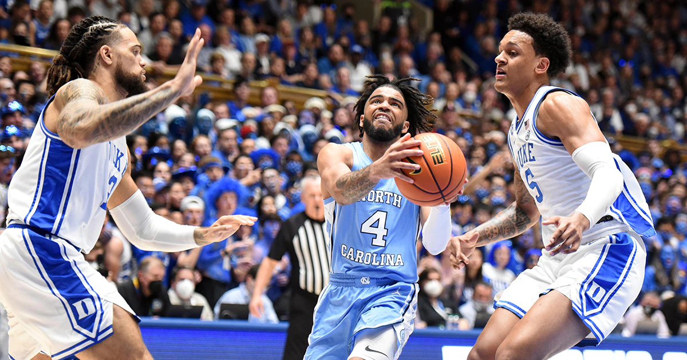

UNC got off to a hot start, as Caleb Love cut and fed Armando Bacot for a thunderous dunk for the first points of the game. Brady Manek drilled his first three and the Tar Heels amasssed a 11-4 lead over Duke with 15:51 left in the half.
The Tar Heels went cold while the Blue Devils got the stops they needed to tie the game up by the midpoint of the half. Duke stayed hot and grew their lead to 9 with 3:51 left in the half.
In the final minutes of the half, the Tar Heels got hot from behind the arc. Caleb Love and Brady Manek hit back-to-back threes and with 3 seconds left, RJ Davis drilled a pull-up three over Jeremy Roach to cut Duke's lead down to 2.
Back to Home